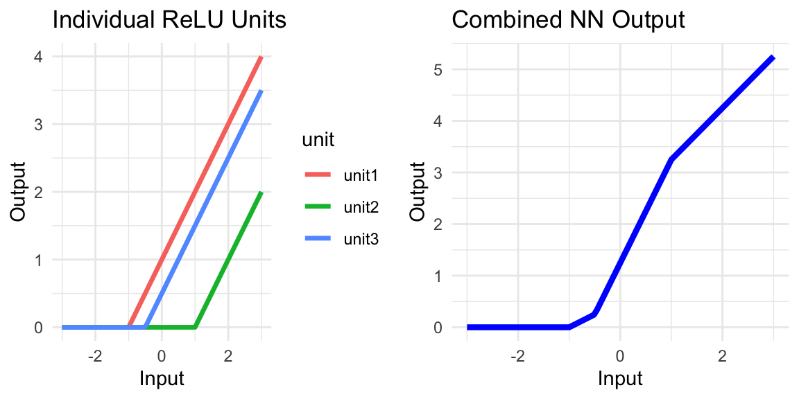
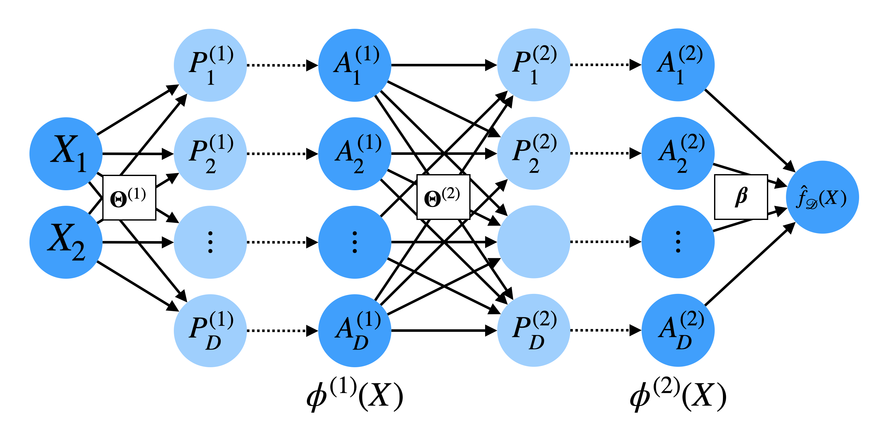

Lecture 18: Introduction to Neural Networks and Deep Learning
Author
Geoff Pleiss
Published
December 17, 2025
Learning Objectives
By the end of this lecture, you should be able to:
Describe the structure of a neural network mathematically, using appropriate notation and terminology
Compare and contrast neural networks to fixed basis expansions and boosted ensembles
Explain the role of activation functions in neural networks
Compare and contrast how width and depth affect the expressivity of neural networks
Compare and contrast how width and depth affect the number of learnable parameters in neural networks
Neural Networks
This final module will focus on the most popular class of models in machine learning today: neural networks, deep learning, and generative AI. Briefly, we will cover:
The basic anatomy of neural networks, and how they relate to other models we’ve seen (today’s lecture)
How to train neural networks (next lecture)
Why neural networks work so well in practice, and modern variants of the basic architecture (last lecture)
Why are they Called “Neural” Networks?
Neural networks were originally inspired by biological neural networks in the brain.
At a very rough level, the basic unit in a brain is a “neuron,” which receives some input signal, processes it, and produces an output signal.
These neurons are highly connected to one another, forming a complex network of interconnected processing units.
The “lowest level” neurons, like sensory neurons, receive a raw input signal (e.g., light, sound)
This signal gets propagated through layers of interconnected neurons, each processing the signal in some way to extract higher-level information
By the time the signal reaches a target location in our brain, the original signal (e.g. light waves) has been transformed into a high-level concept (e.g. “that’s a cat!”)
Artificial neural networks are machine learning models that are loosely inspired by this biological idea.
We create a set of “neurons,” which are simple functions that modulate some input
The first set of input neurons receive the raw input covariates (e.g. pixels in an image)
Intermediate sets of neurons in hidden layers apply transformations to convert these covariates into higher-level features with semantic meaning
The final set of neurons have sufficiently processed the input to the point where their output is a response of interest (e.g. image label, text completion, etc.)
And that’s where the neuroscience connection ends. From now on, we’re back to math and statistics!
Neural Networks versus Deep Learning versus Generative AI
The terms neural networks and deep learning are used interchangeably to refer to the same class of models. (Long story short: “deep learning” was a rebranding of “neural networks” in \(\approx 2005\) because “neural networks” had a bad reputation after the AI winter of the 1990s. Now that they’re popular again, both terms are used.)
Generative AI refers to a specific class of neural network models, generally trained on extremely large datasets in an unsupervised manner to generate new content (e.g. text, images, audio, code, etc.)
Mathematical Motivation
In the last lecture, we discussed boosted ensembles, which composed simple “weak learners” \(h_1, \ldots, h_j\) (e.g. bump functions or small decision trees) into ensembles of the form:
Each weak learner \(h_j\) has a set of learnable parameters \(\theta_j\) (e.g. split points in trees, location of the “bump”), so we can also write the ensemble like:
where \(\hat h(X; \theta_j)\) is the \(j^\mathrm{th}\) weak learner with parameters \(\theta_j\). Crucially, \(\hat h(X; \theta_j)\) applies some simple non-linear transformation to the input \(X\) to weakly predict the residual response, and the ensemble sums up these non-linear transformations to produce a final prediction.
NoteWhere have we seen this before?
Earlier in the course, we discussed a similar class of predictive models.
What was it?
Fixed basis expansions!
Let \(\hat h(X; \theta_j)\) represent a polynomial basis function, where \(\theta_j\) represents the degree of the polynomial, i.e.
\[ \hat h(X; \theta_j) = X^{\theta_j}. \]
We can also think of \(\hat h(X; \theta_j)\) as a “weak learner” of sorts, and we combine \(m\) such weak learners with different degrees to form a polynomial regression model:
Both models learn the \(\beta_j\) weights from data. However, there are two key differences between boosted ensembles and fixed basis expansions:
In boosted ensembles, the parameters of the weak learners \(\theta_j\) are learned from data during training. In fixed basis expansions, the parameters \(\theta_j\) are fixed ahead of time (e.g. polynomial degrees); only the \(\beta_j\) weights are learned from data.
In fixed basis expansions, the \(\beta_j\) weights are learned simultaneously via a single optimization problem (e.g. least squares). In boosted ensembles, the \(\beta_j\) weights and weak learner parameters \(\theta_j\) are learned sequentially via an iterative procedure.
From Boosted Ensembles to Neural Networks
Boosted ensembles learn the terms in the summation sequentially. I.e., we optimize \(\beta_j\) and \(\theta_j\) simultaneously after fixing all previous \(\beta_1, \ldots, \beta_{j-1}\) and \(\theta_1, \ldots, \theta_{j-1}\).
The simplest neural networks (one-hidden-layer networks) are essentially the same model however, all parameters \(\beta_j\) and \(\theta_j\) are learned simultaneously via a single optimization problem.
WarningWhat could go wrong?
What challenges might arise when learning all parameters simultaneously?
The optimization problem is non-convex, so we may get stuck in local minima.
The number of parameters can be very large, potentially leading to overfitting.
Both of these potential concerns prevented statisticians from taking neural networks seriously for many years. However, in practice, neither of these issues are as problematic as one might expect. Us statisticians are only starting to understand why this is the case!
The anatomy of a Neural Network
Neural networks have the same functional form as boosted ensembles/basis regressions:
:::{.callout-note collapse=“true” title=“Implicit bias term”} As we have throughout this course, we often drop the intercept term \(\theta_{j0}\) for notational convenience, and we assume that \(X\) has been augmented with a column of ones to account for the intercept. :::
\(\hat h(X; \theta_j)\) is called a neuron or hidden unit
\(\theta_j \in \mathbb{R}^p\) are the learned parameters, or weights of the neuron, and
\(g: \mathbb{R} \to \mathbb{R}\) is a fixed non-linear activation function, typically chosen to be the Rectified Linear Unit (ReLU) function:
\[ g(z) = \max(0, z). \]
\(\phi(X) = \begin{bmatrix}
g(X^\top \theta_1) \\
g(X^\top \theta_2) \\
\vdots \\
g(X^\top \theta_M)
\end{bmatrix}\) is called the hidden feature representation, or the activations of \(X\).
The final prediction is a linear combination of these activations:
This functional form: a linear combination of non-linear transformations of the input, looks just like basis regression. Again, the key difference is that the basis features \(\phi(X)\) are learned from data, rather than using a fixed basis expansion.
The Purpose of the Activation Function
The activation function \(g(z) = \max(0, z)\) introduces non-linearity into the model. It produces a non-linear basis feature of \(X\).
Consider the case with one-dimensional data:
\[ g(\theta_{j0} + X \theta_{j1}) = \max(0, \theta_{j0} + X \theta_{j1}). \]
Code
library(ggplot2)relu <-function(x, beta0, beta1) pmax(0, beta0 + beta1 * x)x_vals <-seq(-3, 3, length.out =100)y_vals <-relu(x_vals, beta0 =1, beta1 =2)ggplot(data.frame(x = x_vals, y = y_vals), aes(x, y = y)) +geom_line(size =1.5, color ="blue") +labs(title ="ReLU Activation Function (β0 = 1, β1 = 2)", x ="Input", y ="Output") +theme_minimal()
NoteWhere have we seen this before?
This is similar to a linear spline basis function with a knot at \(x = -\theta_{j0} / \theta_{j1}\).
By forming a linear combination of many such ReLU basis functions, each with different offset and slope parameters \(\theta_j\), we end up with a piecewise linear function:
Code
library(tidyverse)library(ggplot2)relu <-function(x, beta0, beta1) pmax(0, beta0 + beta1 * x)x_vals <-seq(-3, 3, length.out =100)unit1 <-relu(x_vals, beta0 =1, beta1 =1)unit2 <-relu(x_vals, beta0 =-1, beta1 =1)unit3 <-relu(x_vals, beta0 =0.5, beta1 =1)combined <-0.5* unit1 + (-1) * unit2 +1.5* unit3df_units <-tibble(x = x_vals, unit1 = unit1, unit2 = unit2, unit3 = unit3) |>pivot_longer(-x, names_to ="unit", values_to ="y")p1 <-ggplot(df_units, aes(x, y, color = unit)) +geom_line(size =1.2) +labs(title ="Individual ReLU Units", x ="Input", y ="Output") +theme_minimal()p2 <-ggplot(data.frame(x = x_vals, y = combined), aes(x, y = y)) +geom_line(size =1.5, color ="blue") +labs(title ="Combined NN Output", x ="Input", y ="Output") +theme_minimal()library(gridExtra)grid.arrange(p1, p2, ncol =2)

NoteWhat would happen if \(g(z) = z\)?
What if we used the identity activation function \(g(z) = z\) instead of ReLU?
The model would reduce to a standard linear regression model:
The model would lose its ability to capture non-linear relationships in the data.
Picture Representation
While we have been using mathematical notation to describe neural networks, you will often see them represented by a toy diagram:
Diagram of a simple neural network with one hidden layer
Each circle represents a neuron
Each solid arrow represents a learned parameter
Each dotted arrow represents an application of the activation function \(g(\cdot)\)
\(\Theta \in \mathbb R^{m \times p}\) is the concatenation of all the \(\theta_j \in \mathbb R^p\) weights
\(A_1, \ldots, A_m\) are the activations of each neuron, so that \(\phi(X) = \begin{bmatrix} A_1 \\ \vdots \\ A_m \end{bmatrix}\).
\(P_1, \ldots, P_m\) are often referred to as the pre-activations, i.e. the linear combination before applying the activation function:
\[ P_j = X^\top \theta_j, \quad A_j = g(P_j). \]
This diagram shows how the input covariates are “processed.” It will become especially useful when we discuss deeper neural networks with multiple hidden layers as well as the training procedure for neural networks.
Width and Depth
The term width typically refers to the number of neurons \(M\) in the hidden layer.
Increasing the width increases the number of learnable parameters, as well as the expressivity of the model.
TipWide Neural Networks are Universal Approximators
The number of pieces in the piecewise linear function \(\hat{f}_\mathcal{D}(X) = \sum_{j=1}^M \beta_j g(X^\top \theta_j)\) grows with the number of neurons \(M\).
With enough neurons, a piecewise linear function can approximate any continuous function arbitrarily well.
Thus, neural networks with one hidden layer and sufficiently many neurons are called universal approximators.
Recursively Constructing Basis Functions
So far, we’ve only explored neural networks that look very similar to boosted ensembles or spline basis expansions.
What makes neural networks really powerful is that we can stack multiple hidden layers on top of one another to recursively construct basis functions.
This concept of deep neural networks can create extremely powerful basis functions with exponentially fewer learned parameters than a single-layer network.
Deep Neural Networks
The key idea is to recursively construct basis functions of the form:
This idea is perhaps best understood through the diagram representation:

Diagram of a deep neural network with multiple hidden layers
Here, we have multiple hidden layers \(\ell \in 1, \ldots, L\), each with its own set of:
learned weights \(\theta_j^{(l)}\) and
activations \(\phi^{(l)}(X)\).
The final prediction is still a linear combination of the last layer’s activations, i.e. it is a basis regression model with the basis features \(\phi^{(L)}(X)\):
However, the basis features \(\phi^{(L)}(X)\) are recursively constructed through a non-linear combination of previous basis function \(\phi^{(L-1)}(X)\)
TipExponential Expressivity of Depth
The key insight: depth allows us to compose non-linear transformations, leading to exponentially more expressive functions.
Consider a simple example with one-dimensional input:
A single ReLU neuron creates one “bend” or linear piece
A hidden layer with \(M\) neurons can create up to \(M+1\) pieces
Now consider what happens when we add a second hidden layer:
Each neuron in the second layer applies ReLU to a combination of the first layer’s outputs
This creates bends on top of the already-bent function from the first layer
The result: we can now create pieces within pieces
More precisely:
With 1 hidden layer of width \(M\): we get \(\mathcal{O}(M)\) linear pieces
With 2 hidden layers of width \(M\) each: we get \(\mathcal{O}(M^2)\) linear pieces
With \(L\) hidden layers of width \(M\) each: we get \(\mathcal{O}(M^L)\) linear pieces
Exponential growth! With the same total number of parameters, a deep network can represent exponentially more complex functions than a shallow one.
Why Does Exponential Expressivity Matter in Practice?
Real-world data often has hierarchical structure (e.g., images have edges → shapes → objects)
Early layers learn simple features (e.g., edges in images, phonemes in audio)
Middle layers compose these into intermediate features (e.g., shapes, syllables)
Deep layers combine intermediate features into high-level concepts (e.g., faces, words)
This hierarchical processing mirrors how our brains work, and it’s why depth is so powerful for complex tasks like vision and language understanding.
A representation of increasingly complex features extracted from a neural network.
Width vs Depth: Parameter Counts and Expressivity
NoteParameter Count
Consider a neural network with:
Input dimension \(p\)
\(L\) hidden layers of width \(M\) each
How many learnable parameters does this network have (in big-O notation)?
The first hidden layer has \(M\) neurons, each with \(p\) weights: \(M \times p\) parameters
Each subsequent hidden layer has \(M\) neurons, each connected to \(M\) outputs from the previous layer: \(M \times M = M^2\) parameters per layer
The output layer has \(1\) neuron connected to \(M\) outputs from the last hidden layer: \(M\) parameters
Thus, the network has \(Mp + (L-1)M^2 + M = \mathcal{O}(LM^2)\) parameters in total.
With these parameter counts in mind, we can see that depth is much more efficient than width for increasing expressivity.
TipSummary: Depth vs Width
Increasing the width \(M\) increases the parameter count quadratically (\(\mathcal{O}(M^2)\)), and slowly increases the number of linear pieces.
Increasing the depth \(L\) increases the parameter count linearly (\(\mathcal{O}(L)\)), but exponentially increases the number of linear pieces (\(\mathcal{O}(M^L)\))!
Summary
Neural networks are non-linear predictive models that drive most of the ML/AI revolution today.
They are similar to boosted ensembles, but all parameters are learned simultaneously rather than sequentially.
They are similar to basis regression, but the basis functions are learned from data rather than fixed ahead of time.
The basic building block is a neuron: a linear combination of inputs passed through a non-linear activation function (e.g. ReLU).
Depth allows neural networks to recursively construct basis functions, which intuitively capture increasingly hierarchical/semantically meaningful features.
Increasing the width (number of neurons) increases expressivity slowly and increases parameter count quadratically.
Increasing the depth (number of layers) increases expressivity exponentially and increases parameter count linearly.